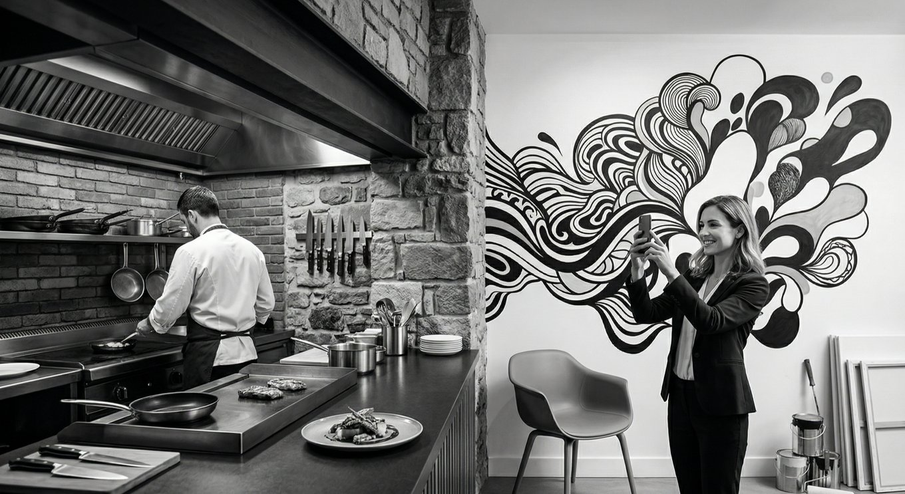

感情的評価が支配する時代の生存戦略

どーも、とーるです！
今回はインスタでお付き合いのある"スミレさん"主宰のグループ共有会で、僕が行った講義の深掘りと、当日お話しきれなかった一部をコラム化しました。
スミレさんの許可も得れたことですし、講義部分だけの視聴もできます‼
【お店のサポーター育成コーチ】
培ったSNSノウハウで実店舗のサポートをしたい！という方は是非スミレさんをフォローしてあげてください‼
スミレさんのInstagramはこちら
https://www.instagram.com/sumire_supporter?igsh=MXA4bmgzcmkxdDZxag==
現代の消費活動において、「おいしい」や「接客が良い」といったスペック評価 つまり「認知的評価」は、もはや選ばれる理由ではなく、市場に存在するための「絶対条件」に過ぎません。
情報が飽和し、どの店に行っても一定以上のクオリティが担保されている今の時代、消費者が最後の一歩を踏み出す動機は、もっと直感的で、理屈を超えた「感情的評価」にシフトしています。
ですが、ここには大きな落とし穴があります。
感情的評価という「劇薬」の扱いを間違え、表面的な「映え」や「雰囲気」だけを模倣して自滅するケースが後を絶ちません。
ご存じの通り、"タピオカ""高級食パン"などを筆頭に「芸能人プロデュースの飲食店」「特集で紹介されたカフェ」などがわかりやすい例です。
というわけで今回は、感情的評価の本質と、長く続けたい実業家が取るべき「低コスト・高回転」の戦略について、深く考察していきます。
「よさそう」という推測と、「私の好み」という断言
かつての集客は「あそこは評判がよさそう（認知的評価からの期待）」という動機で動いていました。
ですが、SNSが個人のアイデンティティと密接に結びついた今の現代、特に女性層を中心とした消費行動は、より主観的な「ここは私の好みのお店だ（感情的評価からの断言）」という確信によって突き動かされています。
SNSで流れてくる写真を見て、「おしゃれそうだな」と思うのは認知のプロセス。
ですが、その瞬間に「このライティング、この小物、この空気感……まさに私が私らしくいられる場所だ！」と感じる。
これは単なる情報の受け取りじゃなく、店舗の世界観と自分自身の自己像が合致した瞬間に起こる「感情のスパーク」です。
この感情的評価の恐ろしいところは、「客観的な良し悪し」を無効化する力を持っている点です。
少々値段が高くても、少し立地が悪くても、「私の好みの店だから」という理由ですべてが肯定される。
この「～らしいというフィクション」や「良さそう、おいしそうというイメージ」ではなく、「私好みだ」「デザインが好きだ」という「イメージやフィクションではない"断言"できる要素」こそが、数多ある店舗の中から選ばれるための強力なフックとなります。
感情的評価は「生モノ」であり、「一時的」である
とはいえ、感情的評価（映え・かわいさ・トレンド感）は、極めて「足が速い（一時的）」ということ。
「かわいい！」「好き！」という感情は、脳内報酬系を刺激しますが、人間は刺激に慣れる生き物です。
一度体験し、写真を撮り、SNSにアップして承認欲求が満たされれば、その「感情的な価値」は急激に目減りします。
簡単に言えば"好きだけでは飽きが来る"ってことです。
多くの失敗例は、この「一時的なもの」に対して、膨大な内装費や固定資産、リソースを割いてしまうことから始まります。
× 多額のローンを組んで、特定のトレンドに特化した内装を作る。
× 流行のスイーツを作るためだけに、高価な専用機材を導入する。
これらは、そのトレンドが去った瞬間に「負債」へと変わります。
長く商売を続けたいと考えている人にとって、移ろいやすい「感情」に重い投資をすることは、ギャンブルに近い行為と言わざるを得ません。
「連続起業家」と「実直な実業家」の戦略を混同するな
なぜ、多くの店舗や実業初心者は表面的な感情戦略に惑わされるのか。
それは、メディアやSNSで見かける「成功者」たちの手法を、自分の文脈に当てはめずに真似てしまうからです。
キッチンカーやポップアップ、あるいは短期ブームを狙ったタピオカ店などのビジネスは、感情的評価を100%前面に押し出し、ブームが去る前に一気に投資を回収して、次のビジネスへ乗り換える「ヒット・アンド・ラン」のモデルです。
これを行っているのは、連続起業家や潤沢な資本を持つ事業家です。
彼らにとって、店舗は「長く愛でるもの」ではなく、「利益を生む装置」。
ブームが去れば、看板を付け替え、内装を塗り替え、また次のトレンドに投資する。この「切り替えの早さ」が彼らの武器です。
ですが、「このビジネスで私はやり続けたい！」「地域の人に長く愛される店にしたい」と願う実業家が、彼らの表面的な「映え戦略」だけを真似するのはNGなんです。
彼らと同じ土俵で「トレンドの鮮度」を競っても、資本力と情報スピードで負けるのは目に見えています。
長く続けるための「軽やか」な感情戦略
では、長く続けたい実店舗などは、感情的評価とどう付き合うべきか。
答えは、「感情的評価要素は、低コストで、いつでも捨てられる（変えられる）形で取り入れる」ことです。
重厚な内装や固定設備で「好き」を演出しようとしちゃいけません。
リソースを割くべきは「認知的評価（味・本質）」であり、感情的フックは「軽やか」であるべきです。
例えば、何百万円もかけて特殊な建材を使うんじゃなく、真っ白な壁に、今流行っているテイストのイラストを描く。
あるいは、プロジェクターで投影する。
これなら、トレンドが変われば数万円で塗り替えることができます。
「映え」を作るのは、実は大きな設備ではなく、光の当たり方やテーブルの上の小物です。
これらは「安く、簡単に」変更可能です。
または、メニュー表のデザインや、SNSのトーン＆マナーを季節やトレンドに合わせて微調整する。
「てっとり早く、安く、簡単に、切り替えできること」。
この柔軟性こそが、個人店や小規模事業者が、変化の激しい感情評価の時代を生き抜くための最大の武器になります。
本質（認知的評価）というガッチリした骨組みの上に、トレンドという「着せ替え可能な服（感情的評価）」を着せるイメージですね。
世界の名店を見渡すと、この切り分けが非常にシビアに行われています。
ピンク一色のティーサロンで有名なロンドンの「Sketch」は、数年おきにアーティストを入れ替え、インテリアを大胆に変更しています。（感情的評価要素）
「今の感情的評価」を常にアップデートし続けるということ。
ですが、その根底にあるのはミシュランの星を獲得する料理（認知的評価要素）なんです。
Sketchにとって、ピンクの部屋は「着せ替え可能な服」であり、料理こそが「実体」なんです。
実例をもう一つ。
NYでは、既存の店舗を夜だけ別のコンセプトで運営するような「間貸し」や「ポップアップ」が盛んです。
これは、感情的評価がいかに「一時的」であるかを熟知しているからです。
一つの場所に固執せず、感情を揺さぶる仕掛けだけをパッケージ化して、低コストで場所を移動しながら展開する。
これは、リスクを最小限に抑えつつ感情的評価を獲得する合理的な手法だといえます。
ロジックで守り、感性で攻める
これは実店舗だけではなく"どんなビジネス"でも同じ。
「感情的評価に、あなたの人生（全財産や情熱のすべて）を賭けてはいけない」ということです。
認知的評価（守り）：「おいしい」「誠実」「清潔」。この本質的な評価は、一度積み上げれば簡単には崩れません。
ここにはリソースをしっかり割きましょう。
これが、あなたが「やり続けたい」ビジネスの本体です。
感情的評価（攻め）：「かわいい」「映える」「雰囲気が好き」。これは、お客様を呼ぶための「点火剤」。
点火剤は燃え尽きるのが仕事。そのため、"安く""手軽"に、いつでも別のものに取り替えられるように設計しましょう。
「この店が好き！」というユーザーの断言は、非常に強力な武器になります。
ですが、その「好き」の理由は、時代とともに、そしてユーザーの年齢とともに変わっていきます。
変化を恐れず、しかし本質は揺るがさない。
「表面」は軽やかにトレンドを追い、「中身」は重厚に信頼を積み重ねる。
この二段構えこそが、今の時代に選ばれ、そして残り続けるための唯一の道です。
とーる｜行動経済アナリスト